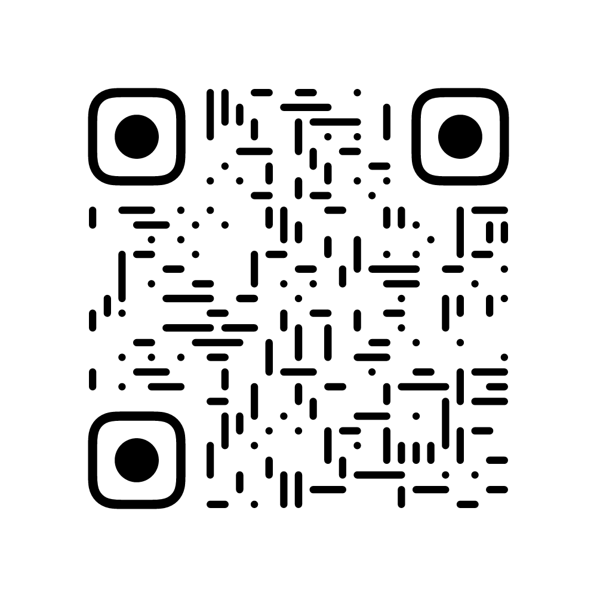

2025第十二届乌镇戏剧节志愿者/实习生应聘报告
扶摇而上，与戏剧共舞
应聘岗位： 宣传组 或 执行组 (根据岗位需求灵活适配)
姓名： 屈子超
电话： 15332468971
邮箱： 15332468971@qq.com
专业： 物理学 (准大二学生)
Publication
一、对戏剧的理解与热情：一场极致共情的“扶摇”之旅
我对戏剧的本质理解，在于其能在有限时间内，将人类极致的喜悦与悲伤高度浓缩并迸发出来，提供一种“极端共情”的高峰体验。这种力量深深吸引着我，它如同一场“扶摇”之旅，引领我进入一个充满无限可能的艺术世界。
深度观剧：沉浸于光影交织的梦境
我曾沉醉于大量戏剧作品之中（约 50+部短片戏剧及多部长篇戏剧，如 3 小时剧目），持续关注乌镇戏剧节青年竞演单元，并对林溪儿等戏剧人的创作抱以由衷的欣赏。每一次观剧，都是一次灵魂的洗礼，让我对戏剧的理解愈发深刻。每一次观看，我常常不自觉地代入角色，体验那份持久的共鸣。
得到学习圈联合讲师 / Get Connected Learning Circle Union Lecturer
《破墙·五重书境》演出剧照 / 'Breaking Walls: Five Realms of Books' Performance Still
《破墙·五重书境》演出剧照 / 'Breaking Walls: Five Realms of Books' Performance Still
亲身实践：从舞台到荧幕的探索
- 高中时期： 重新演绎经典《鸡兔同笼》，并独立创作校园题材剧本《时光重返》。我深信，人生亦如戏剧，充满跌宕起伏，渴望通过剧本表达内心深处最强烈的情感。
- 大一（上）期间： 自编自导一部心理题材微电影，将镜头对准人性的复杂与细腻。
- 大一（下）期间： 参演并深度参与剧本创作（《破墙·五重书境》），该剧于河北艺术中心上演。
与乌镇渊源：一场命中注定的艺术邂逅
初识乌镇在小学，那时它在我眼中不过是寻常古镇。直到严敏导演的《戏剧新生活》节目（尤其《鸡兔同笼》引发强烈共鸣）开启了我的戏剧之旅。我视戏剧为“反时代浪潮的挽歌”，一种将现实中不可实现的梦搬上舞台的艺术，内心因此染上“抹不去的重彩”。我渴望通过志愿者工作“躬身入局”，深度参与这场艺术盛会，与乌镇戏剧节一同“扶摇”而上。
二、核心技能与相关经验：为戏剧节注入活力与效率
我深知戏剧节工作的严谨与高效，凭借以下核心技能与丰富经验，我自信能为宣传组或执行组带来切实的贡献。
内容创作与全媒体运营 (强相关宣传组)：
- 独立 IP 运营： 独立运营个人公众号，持续周更，累计输出 20W+字。从选题、撰稿到排版编辑，我独立完成全流程，具备持续输出高质量原创内容的能力。
- 宣传文案与策划： 我对文字力量有深刻理解（“觉得文字是真的可以改变思维”），具备撰写吸引人宣传文案的基础，能将戏剧的魅力精准传达。
- 知识输出： 曾作为得到学习圈联合讲师进行知识付费输出，具备清晰表达和传播知识的能力。
新媒体与设计：视觉与创意的融合
- 精通 AI 工具应用： 每日投入约 2 小时学习 AI 工具，灵活运用 AI 高效完成笔记整理、会议纪要、PPT 制作、脑图构建、视频剪辑、文档简化等任务，极大提升工作效率。
- 线下设计经验： 曾为“树成林”千人线下见面会、“waytoagi”AI 活动、大广赛等完成付费美工设计（如海报、物料），具备将创意转化为视觉呈现的能力。
- 设计软件能力： 可熟练使用 AI 工具辅助设计，具备基础设计执行力。
- 视频制作： 拥有 vlog 编导拍摄经验及微电影编导经验，熟悉视频制作全流程，能为宣传工作提供多媒体支持。
活动策划与执行 (强相关执行组 & 宣传组)：
- 大型线下活动经验：
- 策划与统筹： 担任全网最大教育博主“树成林”上千人线下见面会策划与美工组核心成员，具备大型活动统筹能力。
- 国际活动服务： 担任世界芭蕾舞赛志愿组成员，具备国际性活动服务基础，能适应多元文化环境。
- 校园活动组织： 作为学生会部长，负责过几乎所有校内大型活动及每月的学助会，拥有丰富的活动组织、协调、执行经验。
- 沉浸式戏剧制作： 担任沉浸式戏剧活动负责人之一，深度参与戏剧构思、现场灯光调试、演员培养、合作方洽谈等全流程，对戏剧活动落地有深刻理解。
- 区域负责人经验： 担任全国性 AI 活动“waytoagi”河北地区负责人，负责海报美工、现场物料筹备、现场拍摄协调与简介撰写等，展现出卓越的组织与协调能力。
- 执行力与细节把控： 上述经历证明我具备强大的活动落地能力、多任务处理能力和对细节的关注，能确保各项任务高效完成。
办公与协作能力 (基础要求)：
- 办公软件： 精通 Word, Excel, PPT 等办公软件（日常工作及 AI 辅助高频使用），能高效处理各类文档。
- 协作与责任心： 丰富的团队项目（学生会、活动策划、戏剧制作、足球、街舞社团）锤炼了优秀的团队协作精神、责任心和自律性，能快速融入团队并贡献力量。
- 抗压能力： 平衡学业（物理学）、个人创作（公众号、丛书）、社团活动（Breaking、足球）、大型活动策划执行等多重任务，具备极强的抗压能力和时间管理能力，能应对高强度工作挑战。
外语能力 (加分项)：
具备良好英语能力。持续学习中，可满足基础工作需求。
三、独特优势与承诺：我的“扶摇”之力
复合型背景
物理学专业的逻辑思维 + 戏剧创作的感性表达 + 新媒体运营的传播力 + 大型活动的执行力，形成独特的多维视角和解决问题能力，能从不同角度为戏剧节贡献力量。
强大的学习与适应力
快速学习掌握 AI 工具并应用于实践，体现强大的适应性和拥抱新技术的能力，能迅速适应戏剧节的各项工作需求。
深度热情与理解
虽非戏剧科班出身，但对戏剧有源于生命体验的深刻理解和炽热激情，渴望从实践层面“扶摇”直上，为戏剧节贡献独特力量。
全程投入承诺
确保能全程投入志愿/实习工作，遵守工作时间安排及规章制度，服从轮岗安排，全力以赴完成各项任务。
四、作品集与证明
（请根据申请岗位重点选择相关作品集附件，后续将在此处添加链接或图片）
- 戏剧相关： 《破墙·五重书境》剧本节选、演出剧照、自创剧本/微电影简介及片段。
- 个人 vlog:
 - 内容创作： 个人公众号链接/代表性文章。 https://mp.weixin.qq.com/s/LC79Hb-iwfMQsVHZD0ZJvg (公众号接入 AI 智能体，可试试和他对话哦)
- 设计作品： 为“树成林”、“waytoagi”AI 活动、大广赛等完成付费美工设计（如海报、物料），具备将创意转化为视觉呈现的能力。 Canva链接
- 活动证明： 相关活动参与证明或现场照片（如树成林、芭蕾舞赛、waytoagi 等）。
- 丛书简介： 独自撰写《逻辑思维训练》三册 有关物理方面自身见解丛书网址 （https://yakfltgr.manus.space)。
- AdventureX 黑客松参与证明/照片。
海报物料相关设计 / Poster and Material Related Design
海报物料相关设计 / Poster and Material Related Design
海报物料相关设计 / Poster and Material Related Design
河北Waytoagi负责人 / Hebei Waytoagi Director
组织活动合影 / Organized Activity Group Photo

主负责项目获奖 / Leading Project Award
AdventureX 黑客松活动照片 / AdventureX Hackathon Photo
AdventureX 黑客松活动照片 / AdventureX Hackathon Photo
AdventureX 黑客松活动照片 / AdventureX Hackathon Photo
五、结语：躬身入局，与戏剧之光共跃动
第十二届乌镇戏剧节“扶摇”的主题，与我渴望突破自我、助力艺术腾飞的愿望高度契合。我并非旁观者，而是渴望成为托举戏剧梦想的一份子。我拥有扎实的技能储备、丰富的实践经验、对戏剧的真诚热爱以及全力以赴的决心。
我深信，我能为乌镇戏剧节的宣传造势或执行落地工作带来活力、创意和高效的执行力。恳请组委会给予我一个“躬身入局”的机会，让我在乌镇的青石板路上，与戏剧之光共同跃动。